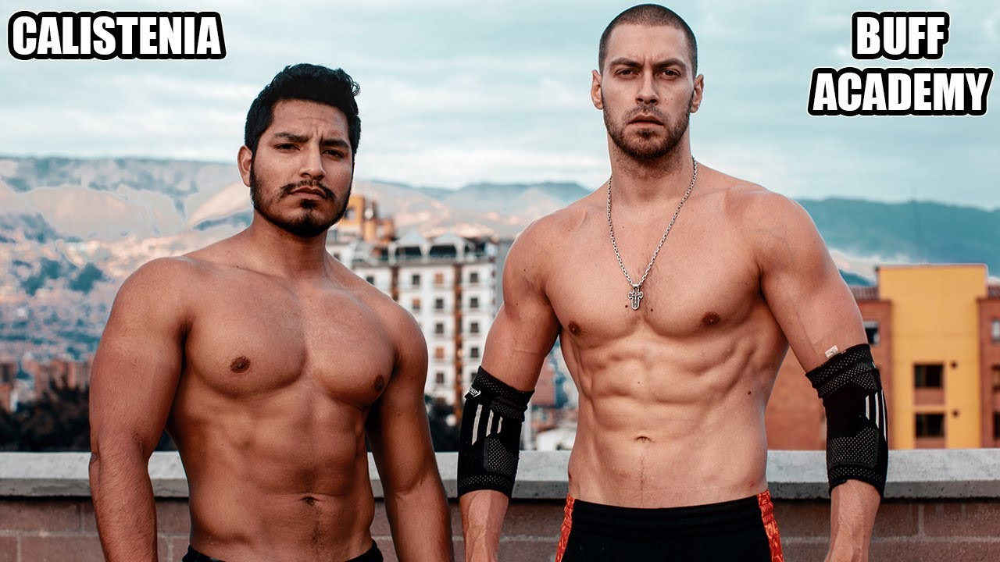
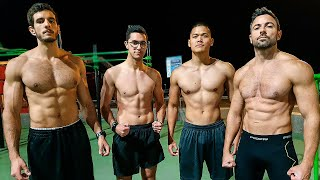
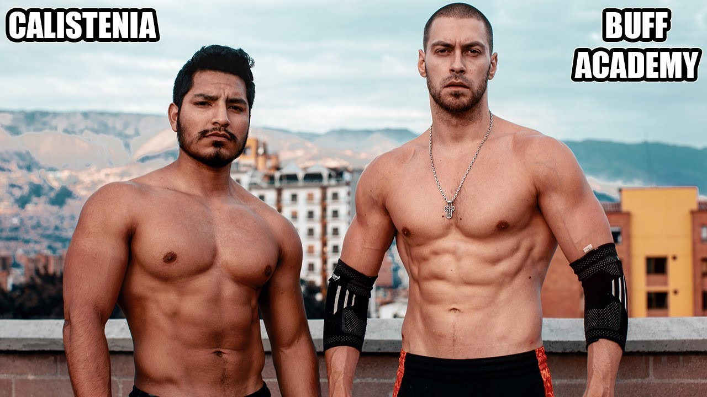
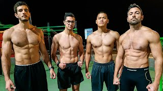
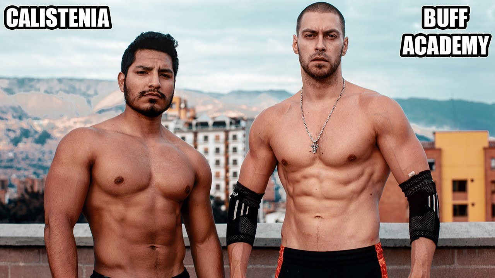
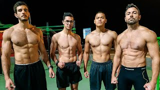
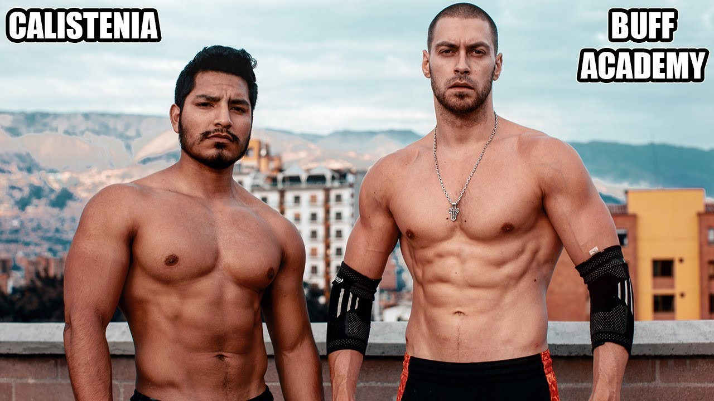
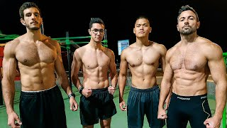

En Calistec nos encargamos a la venta, implantación y mantenimiento de equipos de calistenia y parques de entrenamiento. Además, Calistec somos los encargados de organizar eventos deportivos de Calistenia a nivel nacional en los que se evalúan diferentes tipos de enfoques con referencia a la calistenia.
Nuestro objetivo como Empresa es ampliar nuestra comunidad de calisténicos a medida que implementamos nuevos ámbitos que aporten a la comunidad .
En resumen, aspiramos a:
Fundador
Alan Shelemen Pereira fundó Calistec con el propósito de entrenar con gente y crear una comunidad de Élite, logrando así, un patrimonio neto de 10$